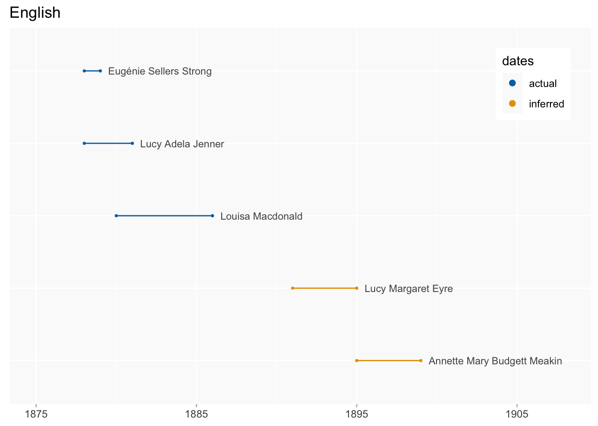
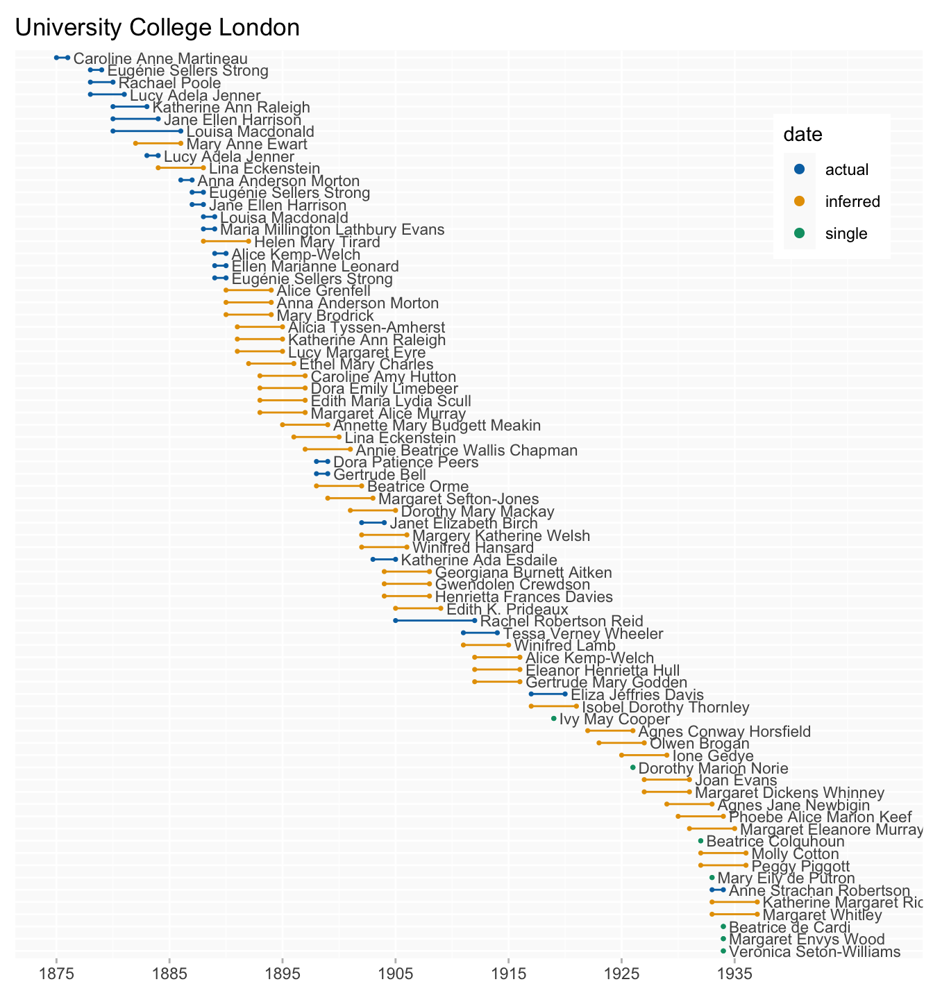
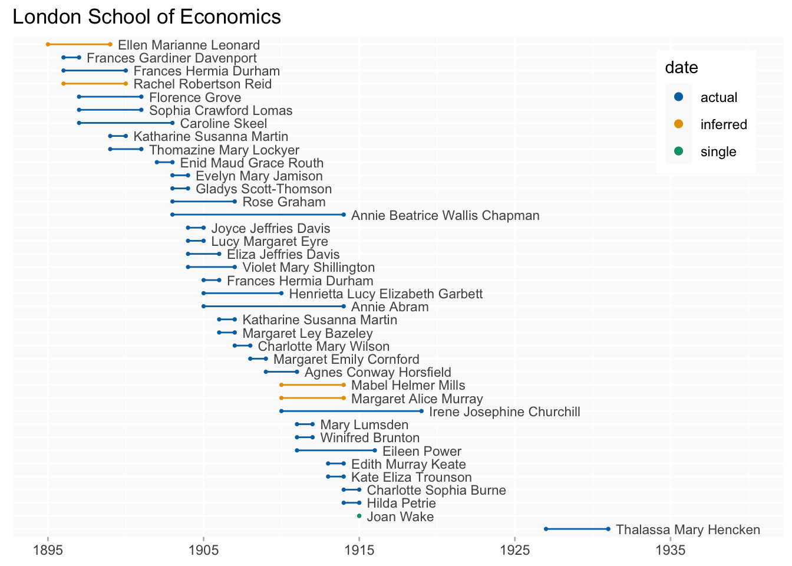
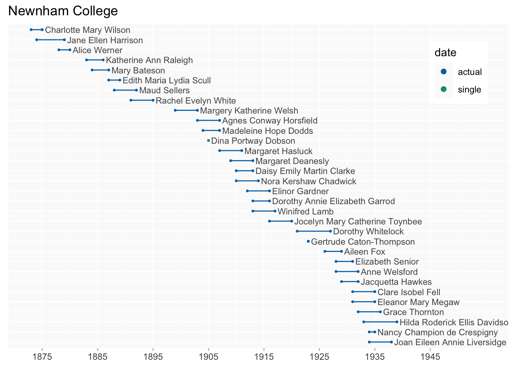
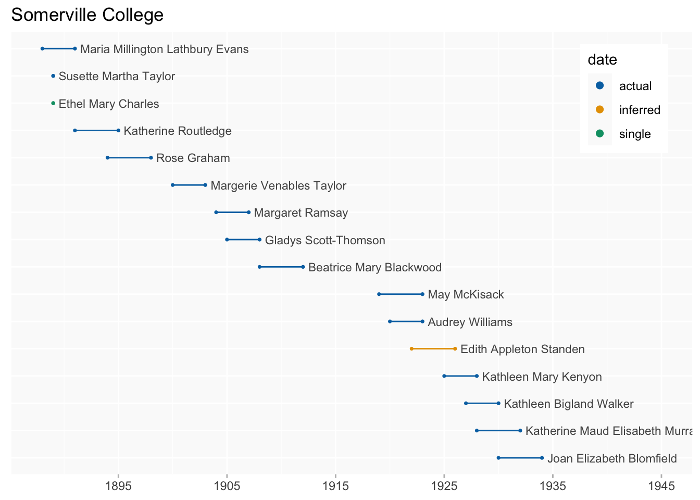
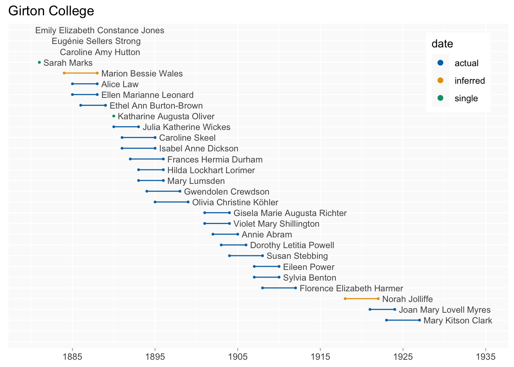
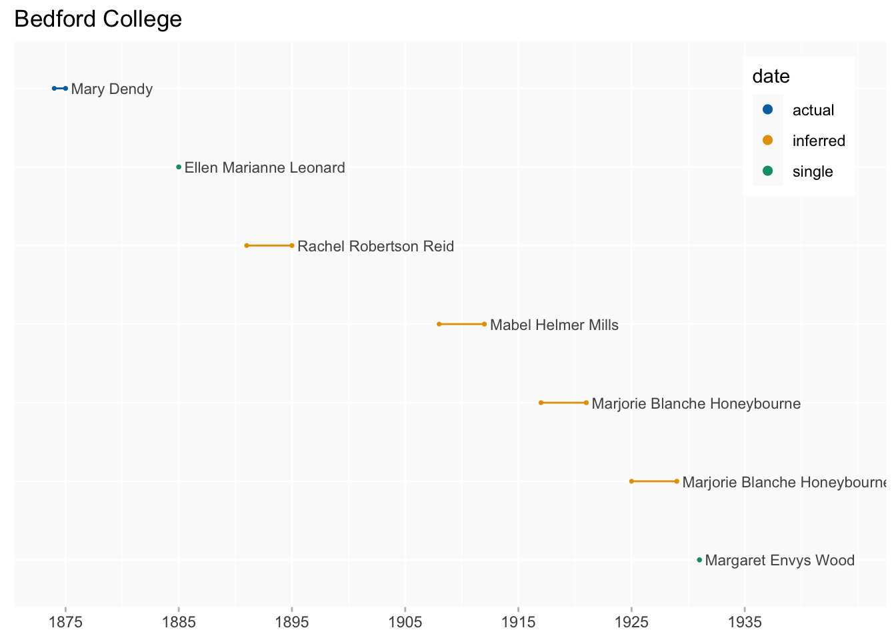

College cohorts
education
Women who went to college together
Experimental dumbbell plots, restricted to women for whom we have at least one date, and for colleges with at least six students. If one of start/end is missing I’ve inferred it using a likely maximum attendance of 4 years (the majority of known durations are 1-4 years): these are highlighted in orange.
A few women attended the same college on more than one separate occasion and in these cases each attendance is shown on a separate bar.
Updates
- added point in time/latest date dates
- added colleges which (following the addition of new data) have now reached the six student threshold
- improved display
- UCL “cohorts” by subject/teacher
Wikibase query
Education - all women who went to tertiary education institutions
University College London
Limited to more popular subjects/teachers.
by subjects

by teachers

all
I’ve kept this even though it’s a bit absurd…
To view this at full size (so it’s easier to read the names!), right-click [or tap with two fingers] on the image and select “open image in new tab” (or something similar) in the menu.
we haven’t put end dates on UCL students who weren’t getting degrees (as far as I know) - this is because there are quite a few women who attended over a period of 5-10 years maybe with breaks in between [AT]

London School of Economics

Newnham College (Q601)

British School at Athens (Q917)

Lady Margaret Hall (Q585)
Somerville College (Q382)

Girton College (Q600)

St Hilda’s College (Q2278)
Bedford College (Q2027)
